Oorzaak: het interieur (dashboard-uiteinden, achterbank, dakhemel en stijlen, cabin3d.js) lag op de nominale breedte en stak door de gebogen flank en het dak. Fix: buildCabinGeometry houdt het interieur binnen de huid; test scripts/cabine_door_huid_test.mjs.
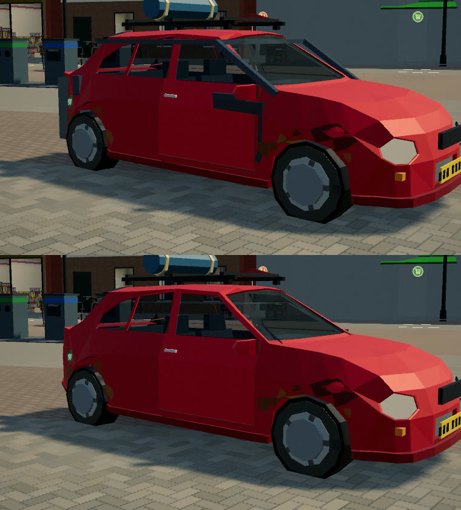
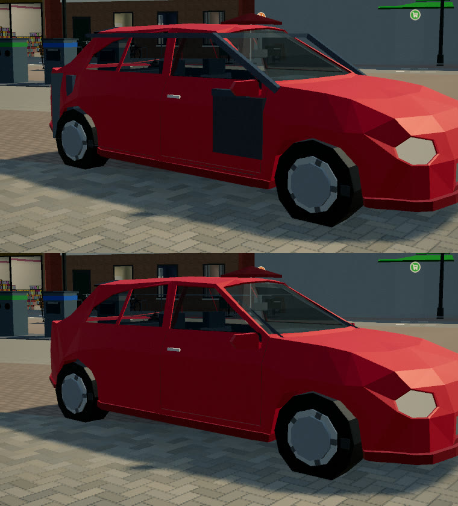
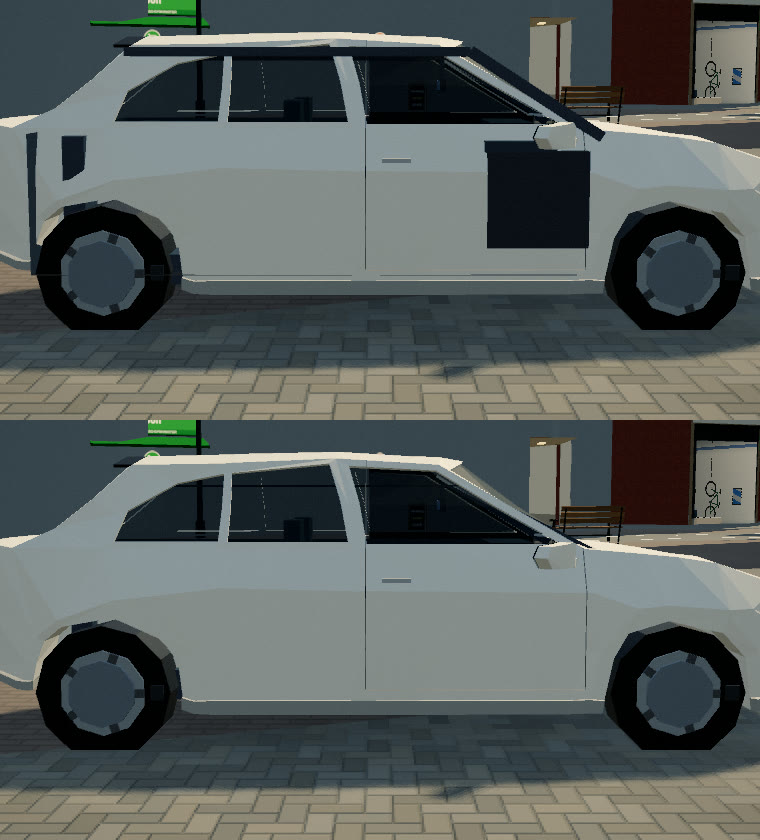
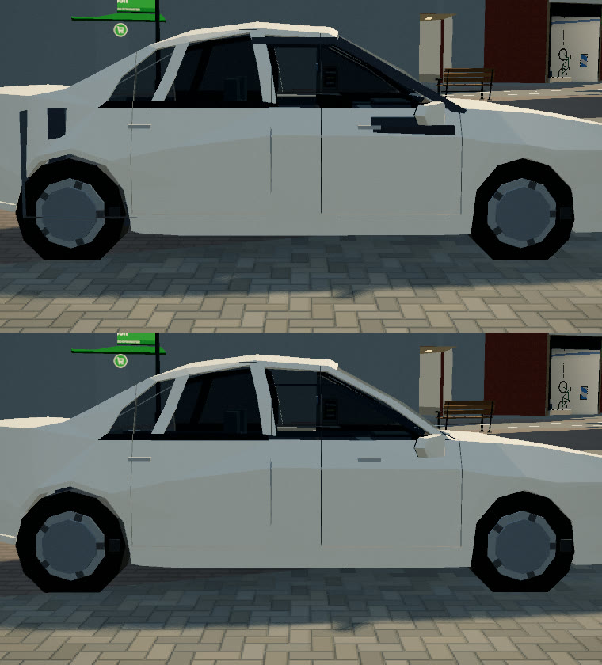
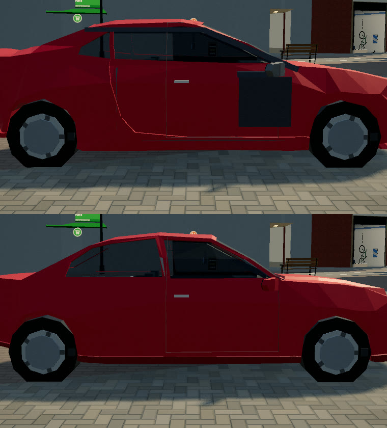
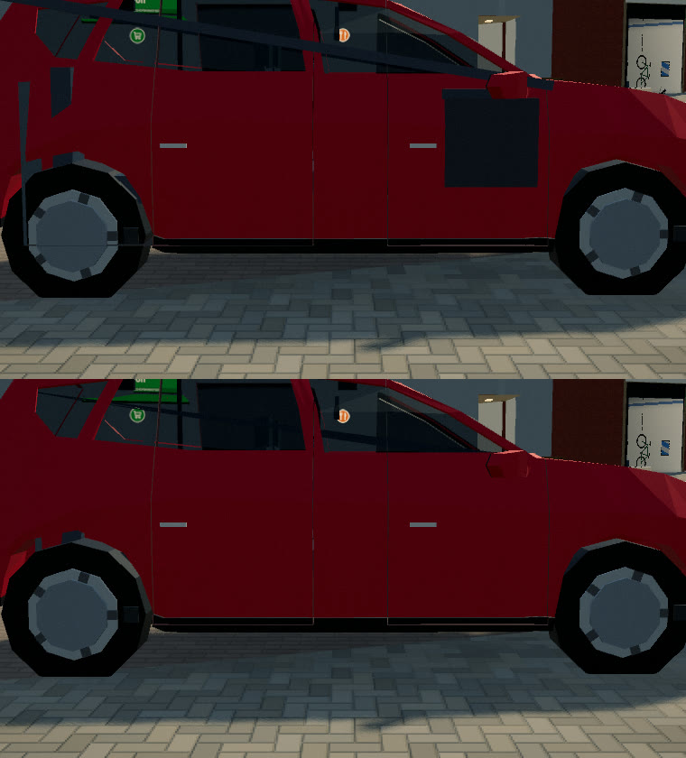
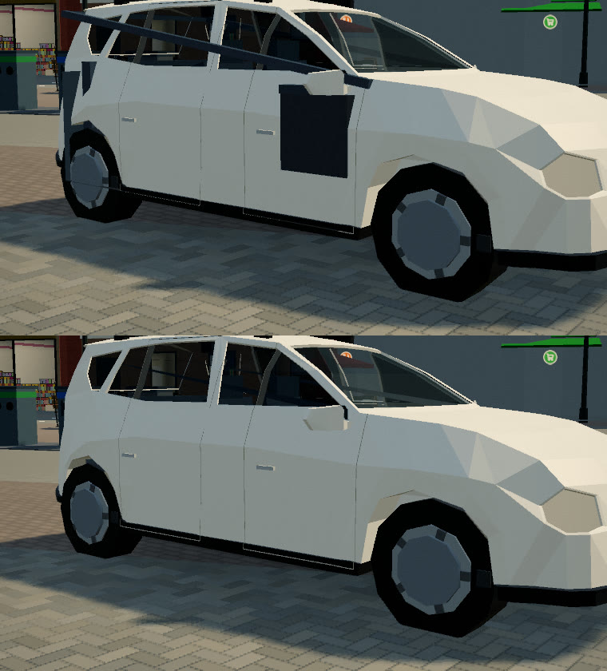
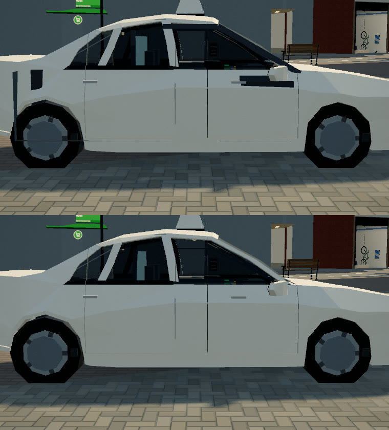
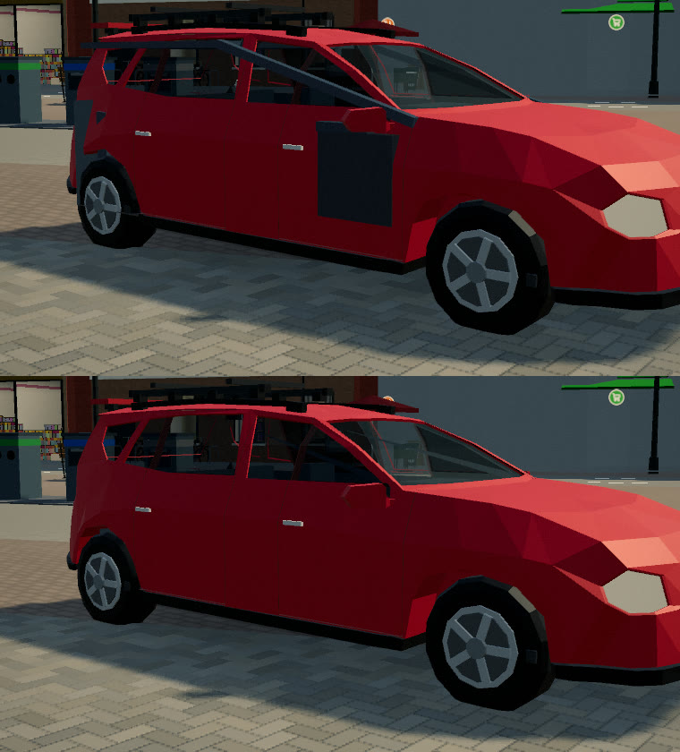
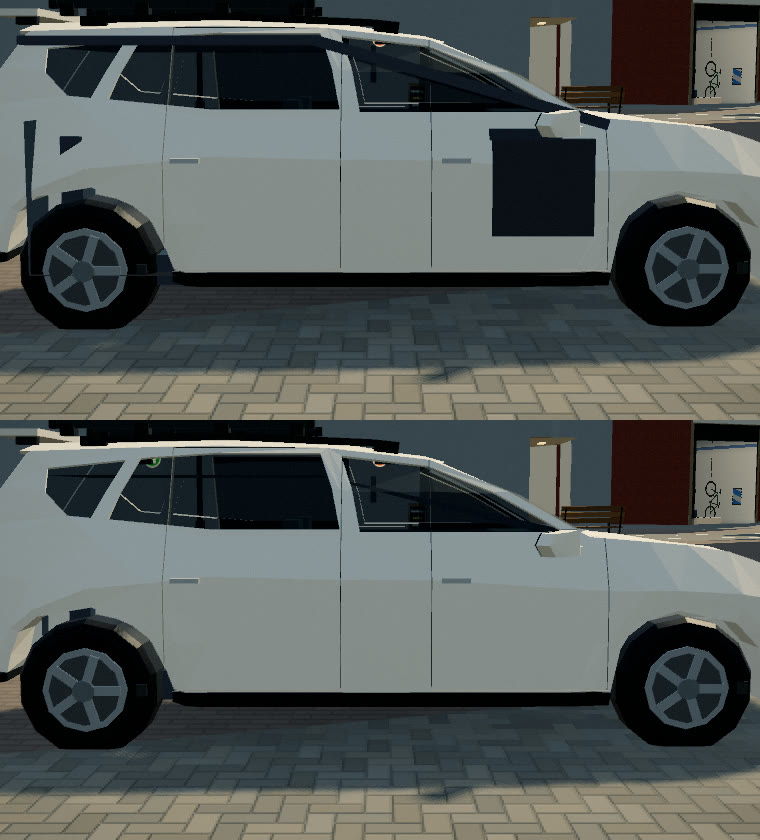
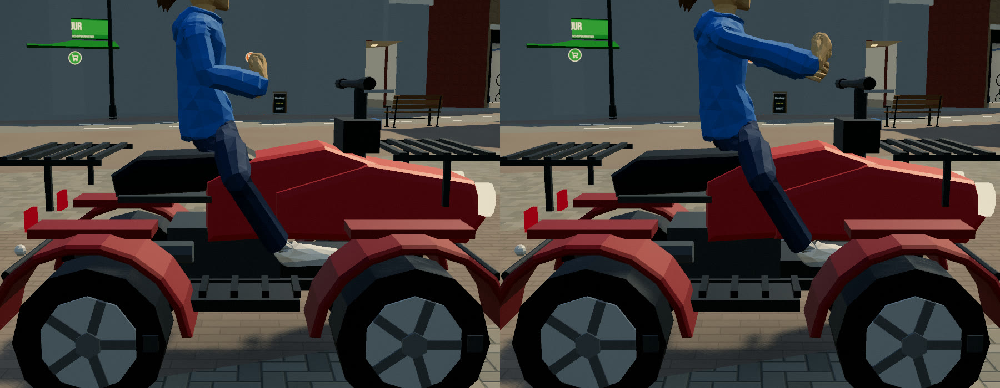